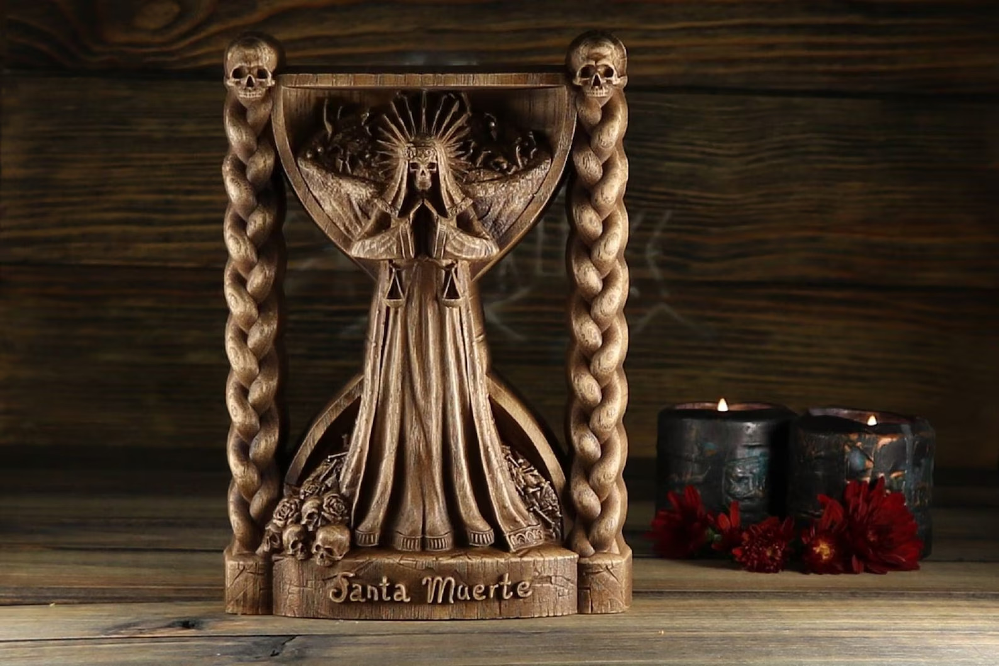
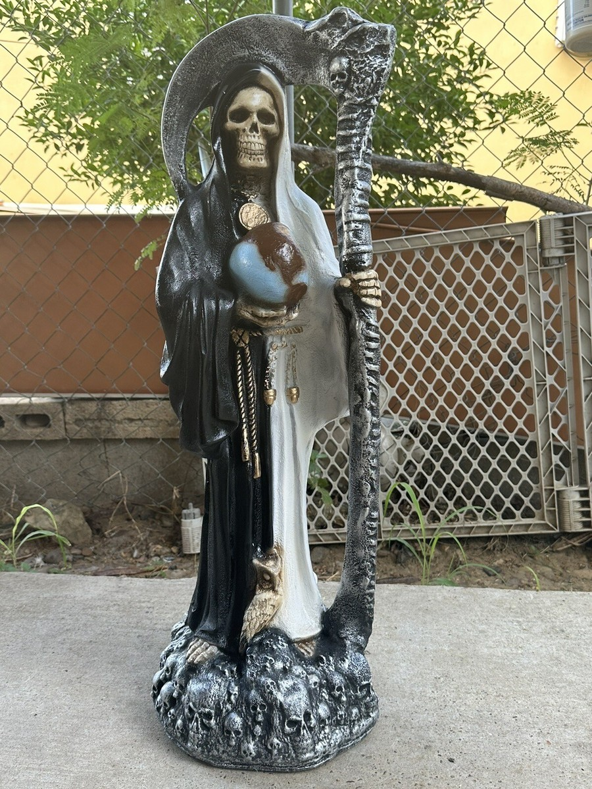
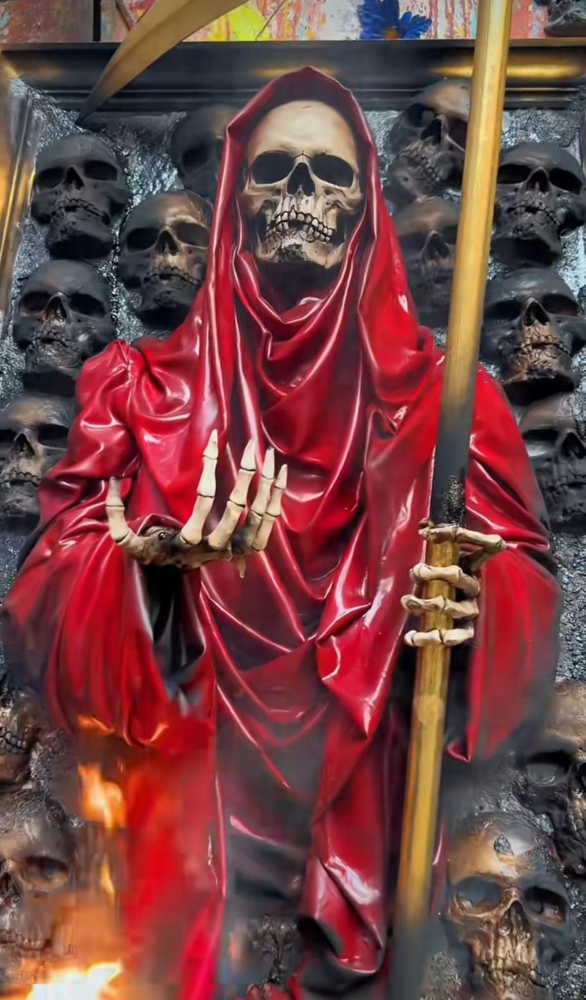
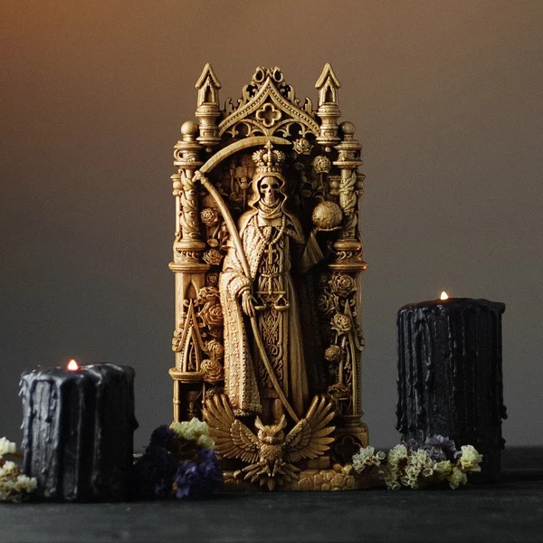

Artesanias de la Santa Muerte

Figura de Madera
Figura tallada a mano en madera, ideal para tu altar.
Brandon Arredondo.
$500 MXN

Estatua Artesanal
Esta estatua artesanal representa la Santa Muerte con una altura de 2.40 metros, ideal para decoración o colección.
Adrian Arboleda.
$1000 MXN

Pintura
Obra artística que captura la esencia de la Santa Muerte a través del realismo, reflejando tanto su simbolismo cultural como la riqueza de la tradición mexicana en una pieza única y expresiva.
Juan Sebastian Diaz.
$1200 MXN

Estatua pequeña para altares
Figura esquelética que representa a la Santa Muerte, símbolo de protección, justicia y amor.
Jose Cortes.
$600 MXN